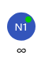
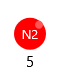
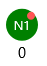
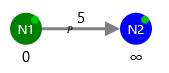
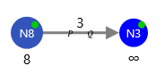

Wilson-Zwick help

This blue circle represents a node that has not yet been discovered by the algorithm. The node's name is shown in the center, and its current known shortest distance (e.g., N1.d) is displayed below. A Green dot shows whether the node is active.

Node that is discovered turns red. This node has red dot so it is not active.

Solved nodes are green.

Edges look like arrows aiming from starting to end node. Each edge has it's weight c(N1, N2) above.

When edge is added to queue P it turns gray. Also edge has a small P that indicates that the edge is in queue P.

When edge is in Q queue it has small Q that indicates it.

Edge can be in both queues at the same time so it will have both Q and P.